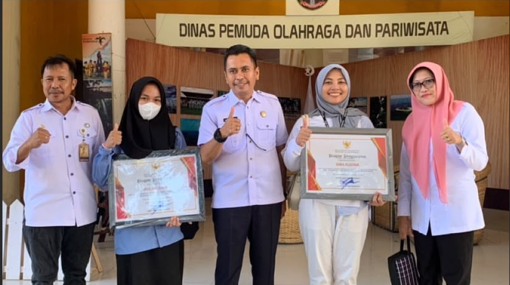

01
Bukti Visual: Karya Editing & Konten
Kompilasi produksi video, transisi dinamis, dan penceritaan kreatif.
02
03
Saya tidak hanya memotong klip video. Saya memadukan logika data dan seni bercerita untuk menghasilkan karya yang komunikatif dan bermakna.
Tiga Pilar Keahlian
Kombinasi unik antara seni visual, analisis eksak, dan keberanian tampil di depan publik.
Kreator & Editor Video
Kemampuan editing tingkat tinggi. Memahami *hook*, retensi penonton, dan visual storytelling untuk Reels/TikTok.
Data Science & Analisis
Mampu mengolah data rumit menjadi wawasan (*insight*). Memiliki pengalaman nyata menggunakan Python dan Excel.
MC & Public Speaking
Tampil percaya diri memandu acara kampus dan umum. Komunikasi luwes yang mampu menghidupkan suasana.
Pengalaman & Kepemimpinan
Rekam jejak akademis, profesional, dan organisasi.
Akademik & Desain Konten
Asisten Dosen & Tim MIT, UNM
Selain menjadi Asisten Dosen, saya berperan besar mengelola visual informasi di Jurusan Matematika UNM sebagai bagian dari Tim Media dan Informasi Teknologi (MIT).
Kepemimpinan
Duta & Inisiator Sosial
Terpilih sebagai Duta Green Generation Sulbar. Aktif sebagai Wakil Ketua Komunitas GenBI, serta Divisi Perlindungan Khusus Forum Anak Daerah Polman.
Karya Desain & Konten Sosial Media
Hasil karya publikasi dan desain konten Jurusan Matematika UNM langsung dari Instagram.
Galeri Panggung & MC
Dokumentasi momen saat memandu acara, berinteraksi dengan audiens, dan public speaking.

Panggung Utama
Memandu Acara Festival Kampus

Interaksi Audiens
Menghidupkan Suasana Event

Sesi Formal
Public Speaking

Persiapan
Momen Backstage
MARI BERKARYA BERSAMA.
Mencari Editor handal, pembicara/MC yang interaktif, atau talenta Data Science? Mari berdiskusi lebih lanjut.